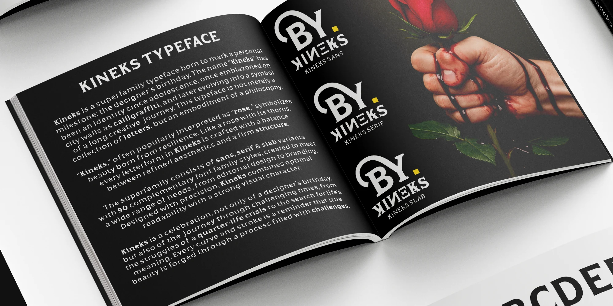
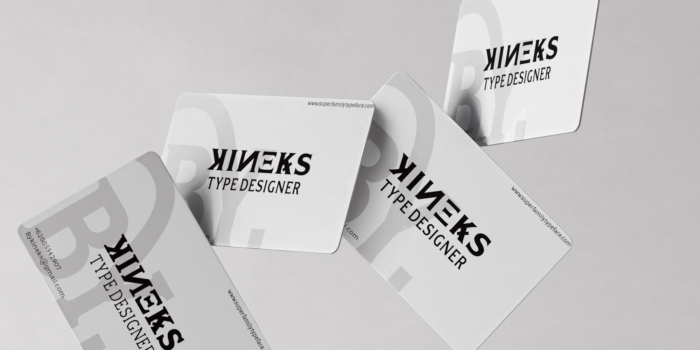
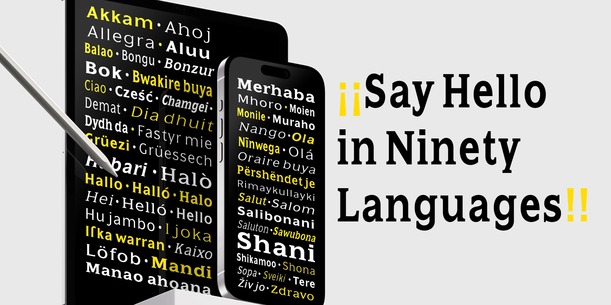
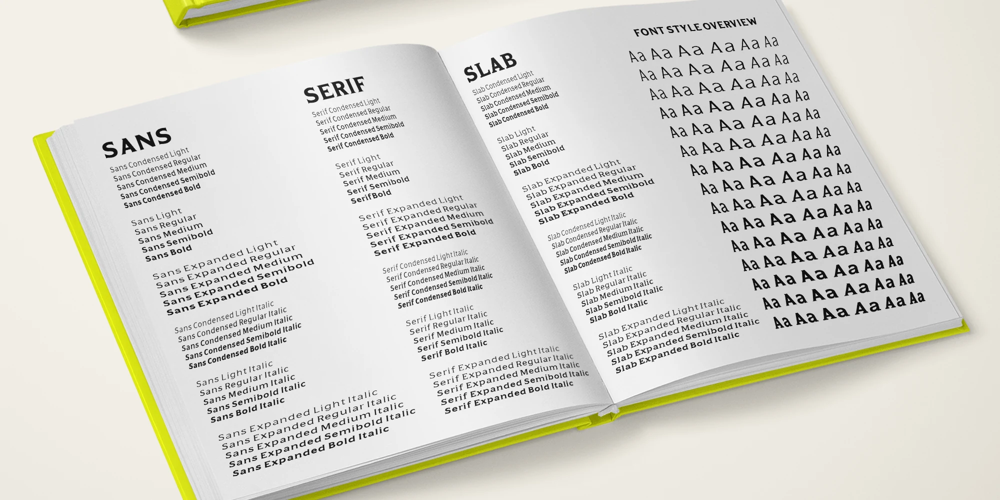
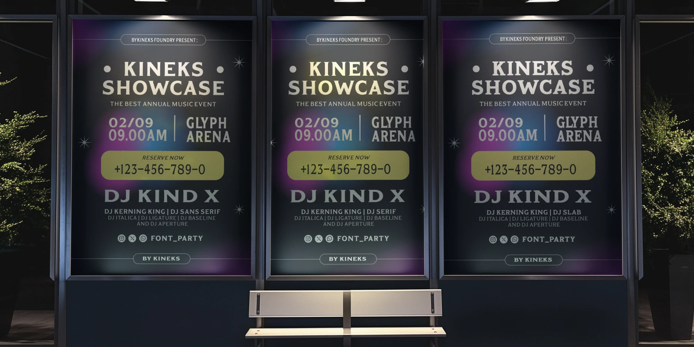
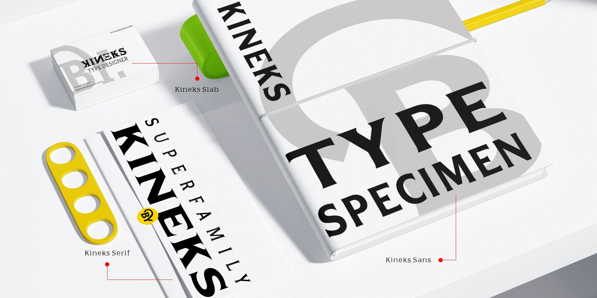
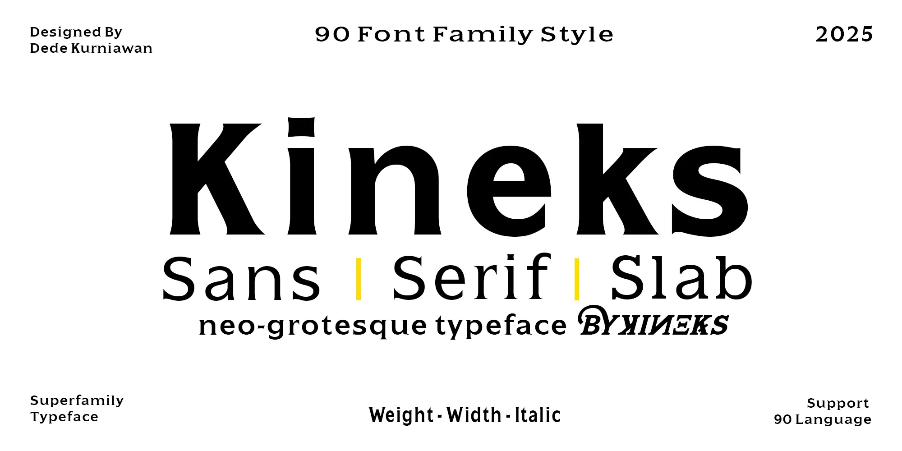

One structure. Three distinct voices.
Kineks
About
Kineks is a static type superfamily by Dede Kurniawan and BYKINEKS for branding, editorial, digital, and display applications. Sans, Serif, and Slab share a consistent typographic structure while maintaining distinct visual characteristics.
Across 90 styles, five weights and three widths pair with matching italics. Rooted in neo-grotesque principles, Kineks combines clarity, balance, and refined details for everything from compact layouts to expressive headlines and identity systems.
All 90 styles are static fonts, with alternate letterforms and standard ligatures. Choose Sans, Serif or Slab, then combine Light, Regular, Medium, Semi Bold or Bold with Condensed, Normal or Expanded widths and Upright or Italic.
Use Kineks when an identity or publication needs related Sans, Serif and Slab voices. For sustained reading, explore Kineks Text; for compact interfaces and dense information, explore Kineks Compact.
Three voices. Your words.
90 static stylesKineks Sans · Regular · Normal · Upright
Type your own words. Family, weight, width, style and OpenType changes preserve your text. Each combination loads its original static font.
Kineks in use
Six type studies





Character Set
Encoded visible characters and verified ligature sequences from Kineks. The study follows your selected static style.
Language support
90 languages
Make it part of your next project.
Explore licensing and the Kineks family.